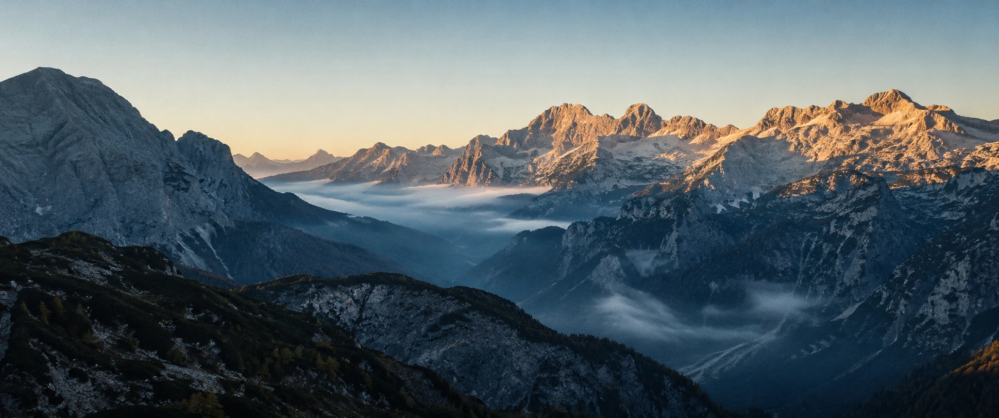

Before the Sky Changed

IMAGE PLACEHOLDER · FS_I_S01_alpine_dawn.webpprompt
Ultra-photorealistic cinematic establishing shot of the Julian Alps in Slovenia at first light, vast limestone peaks, deep green valleys, thin morning mist, cold blue shadows and warm golden sunrise touching the ridges, empty open sky, no people and no visible threat, sublime scale and serene beauty, subtle 35mm anamorphic film grain, natural atmospheric perspective, highly detailed rock and forest textures, restrained ecological-horror mood that only becomes ominous in retrospect, 2.39:1 widescreen, no text, no watermark, no fantasy elements.
At dawn, the Alps belonged to scale.
The valleys were still blue with night. Limestone walls caught the first light. Above them, invisible columns of warm air were already beginning to rise.
Nothing in the sky looked hungry.